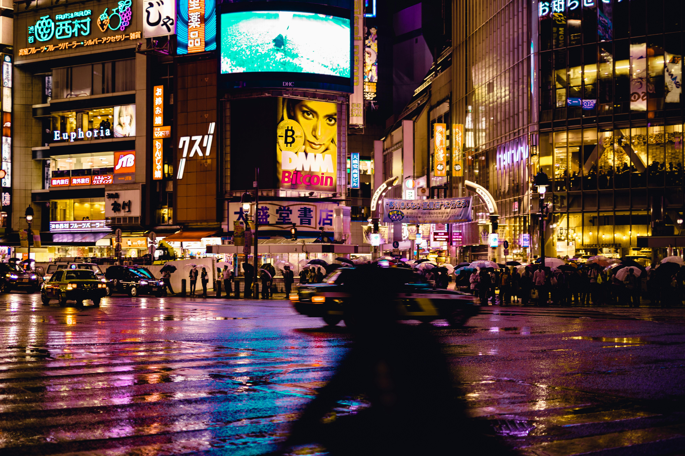

Old Trafford

Old Trafford, also known as the Theater of Dreams, is home to Manchester United. They are a soccer team that plays in the English Premier League that has had great success in their history.
Star Wars

Darth Vader, who was Anakin Skywalker before his fall to the Darkside, was presumed to be the villain during episodes IV and V of the original trilogy. After an internal conflict of saving his son, he perished into the force and continued to look over Luke Skywalker in his journey of a Jedi Knight.
Shibuya, Tokyo
Shibuya, Tokyo has always been on my bucket list to visit since I saw Fast and Furious: Tokyo Drift. During my first deployment we ported in Japan, but unfortunately due to COVID-19 we were restricted the base. Luckily, my wife and I were able to take a vacation and explore Japan for one week.